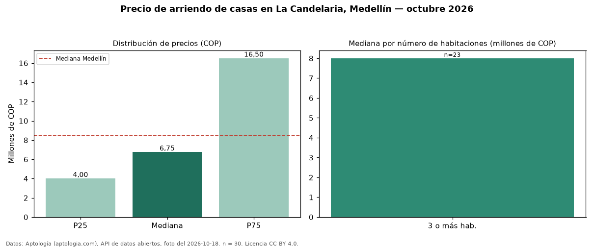

Precio de arriendo de casas en La Candelaria, Medellín — octubre 2026
COP 6.750.000 al mes es el canon mediano de casas en arriendo en La Candelaria, Medellín (n = 30 avisos). Frente al total de Medellín (COP 8.500.000), el barrio está 21 % por debajo. La mitad central de los avisos va de COP 4.000.000 a COP 16.500.000 (razón 4,1), una dispersión alta. Con la mediana de venta del mismo barrio (COP 870 millones), el arriendo anual equivale a 9,3 % del precio de venta: una aproximación gruesa a la rentabilidad bruta, porque compara medianas de ofertas distintas. El segmento con más oferta es el de 3 o más habitaciones (23 avisos, mediana COP 8.000.000). Por mediana, es el puesto 14 de 26 barrios de Medellín con al menos 30 avisos de casas en arriendo: en la franja media. 37 % de los avisos incluye parqueadero, y su mediana (COP 8.000.000) está 19 % por encima de la general. Datos: Aptología (aptologia.com), API de datos abiertos, licencia CC BY 4.0 — https://www.aptologia.com/casas-en-arriendo/medellin/la-candelaria. Archivos: PDF de 2 páginas, CSV con las cifras y gráfica PNG.

| Avisos únicos | 30 |
|---|---|
| Percentil 25 | COP 4.000.000 |
| Mediana | COP 6.750.000 |
| Percentil 75 | COP 16.500.000 |
Fuente: avisos vigentes de portales inmobiliarios recopilados por Aptología, deduplicados (mínimo 30 avisos únicos por celda). Precios pedidos, no cerrados. Fecha: 2026-10-18.